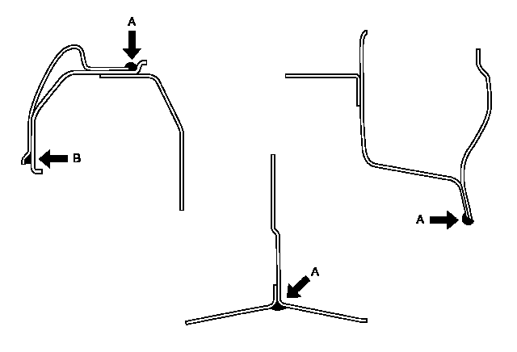
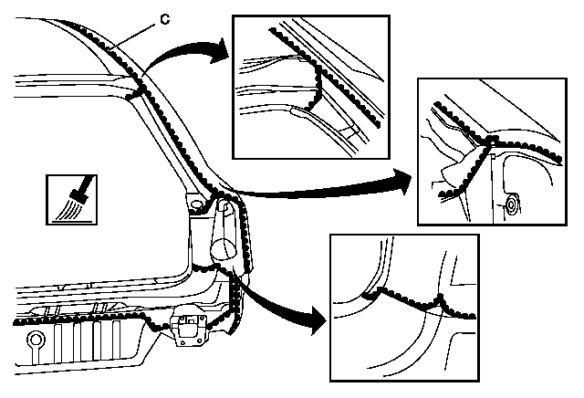
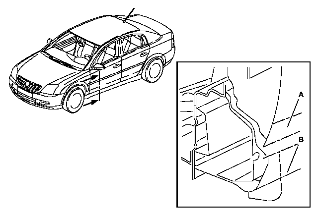
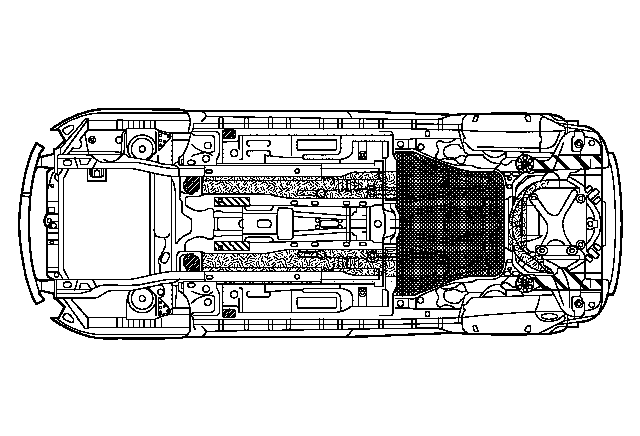

警告：喷涂隔音或防腐材料时，必须谨慎操作并采取预防措施，避免喷入车门和后侧板机构内，如门锁、车窗玻璃升降槽、车窗玻璃升降器和座椅安全带卷收器以及任何运动、转动机构或车身底部的悬挂部件，特别是驻车制动器拉线。涂装后，确保车身所有排水孔畅通。操作不当会加剧腐蚀损坏或限制运动件的工作，导致人身伤害。
任何影响这些特殊处理方法的操作，如更换板件或碰撞 损坏修理操作等，都会使金属失去保护并导致腐蚀。正 确使用维修型防腐材料重新喷涂这些表面至关重要。 安装完维修和/或更换的零件后，所有裸露的金属表面 都必须用金属调节剂和底漆进行处理。
防腐蚀剂为轻稠度材料，是为防止金属至金属表面泄漏 而设计的，如压边焊接凸缘、折边凸缘和整体式镶板连 接点，这些金属表面不容易用常规底漆材料喷涂，而且 涂不进油漆。汽车内外部件适合选用的喷涂材料在下表 中已经列出。建议用常规底漆喷涂较大面积的部件，如
更换的车门和后侧围外板、地板部位、行李厢盖、发动 机舱盖、翼子板等。喷涂底漆过程中，应注意防止漆喷 入车门内和后侧围板金属构件，如门锁、车窗玻璃升 降槽、车窗玻璃升降器和安全带卷收器等。在车身底 部，油漆应避免喷涂到到任何移动或转动零件或减震器
等部件上。喷涂底漆后，确保车身所有排水孔畅通。.
密封剂的作用是，防止水和灰尘进入车辆，而且还具有防腐作用。将密封剂喷涂在行李厢盖折边凸缘、轮 罩、后侧围外板、地板、前围板、车顶和各种其他板件间连接处。原有的密封部位较明显，若这些密封部位被 损坏，应重新密封。新更换板件的连接处应重新密封.更换行李厢盖和车门也要求在卷边法兰处进行密封
法兰接合处、搭接处和接缝处要使用优质中等稠度密 封剂进行密封。所用的密封胶在固化后必须保持保持 韧性并可喷上油漆。
对于要求用密封胶搭接以封闭间隙的开式连接处，应 使用高稠度填料进行密封。按所选材料上的标签说明 进行操作。
为了使维修部位（例如发动机舱盖、翼子板、车门、后 侧板、盖、车顶、发动机舱、车身底部和车内板件等） 恢复原貌，可能需要进行喷涂颜色。因此必须按常规进 行涂前处理、打底漆和喷涂颜色等工艺过程。在各种金 属板件上使用隔音材料（喷涂型），以防止腐蚀并对结
合处进行密封。这种材料可控制车辆内部乘客区域的一 般噪声水平。当隔音层因维修操作或安装新板件而损坏 时，必须用同等隔音材料予以更换。喷涂隔音材料的方 式和位置，可按原厂安装的形式和位置确定。进行焊接 或加热操作中，原来的镀锌或其他防腐涂料已烧损后，
需要清理车内和车身底部的板件表面。在箱式结构的内 表面上，或者当金属板件的布置使得无法接近内表面 时，清除燃烧残余物时应格外小心。
一般信息
对工艺可靠性、功能、环境的高要求表明，车辆的防腐 保护部位同样需要高要求。必须区别生产中采取的措施 和维修车身时（例如，车身受损或发生事故）采取的防 腐保护措施。
我们的客户要求其机动车获得与新车同样的优质防腐保 护。车身修理工作中的保护效果也有相似要求。
防腐保护措施- 车身维修
一般信息
为能更好地理解，以下部分利用图示、车身剖面视图展 示了一些不同的人工操作。
进行车身维修时，将接缝密封
注意:务必将接缝密封剂涂抹到洁净、有底漆或油漆的 基面。涂抹到明亮的钣金部件上会导致黏合力明显减弱 以及使耐用性存在质量缺陷。
以下的剖面图展示了在车身上的密封操作。


进行车身维修时的耐碎石冲击保护
该图示展示了门槛和车门部位标准的聚氯乙烯保护材 料。

注意:如果接触到标准的聚氯乙烯保护材料，对替代材 料进行处理时，不能引发任何由溶解导致的现象。原则 上，替代材料必须安装到洁净、有底漆的基面。利用热 风鼓风机加热标准的聚氯乙烯保护材料，并利用刮刀将 其去除。切勿使用含有高浓度溶剂的稀释剂将其冲掉。
必须去除凹陷或将部件焊接上后再更换标准的聚氯乙烯 保护材料。有标准聚氯乙烯保护材料的部位一般都在车 身。
- • （车辆的前、后）轮壳部位。
- • 车门门槛部位、车门下部、翼子板、后侧板。
- • 汽车地板部位、外部。
- • 车架大梁部位。

注意:车身底部的保护材料必须安装到洁净、有底漆或 涂料的基面。这些出厂件不适合全身喷涂。
在多数情况下，车身底部保护材料用于修理或保养。 进行车身维修时，最好使用可喷涂的接缝密封剂。
优点：
通用，必要时可全身喷涂。
进行车身整修时的车身保护材料
出于技术处理的原因，防腐性材料的售后服务包括单 独、配套系列的调整材料，这些材料可以用在出厂件 中，如果使用得当可以满足高要求。